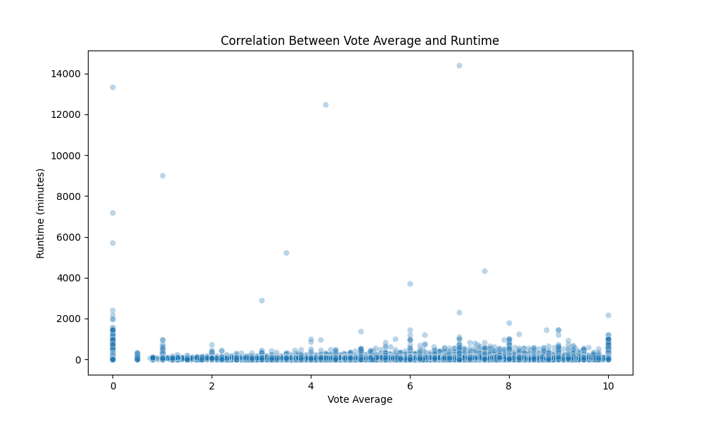
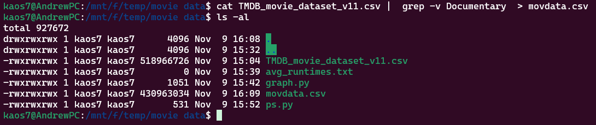
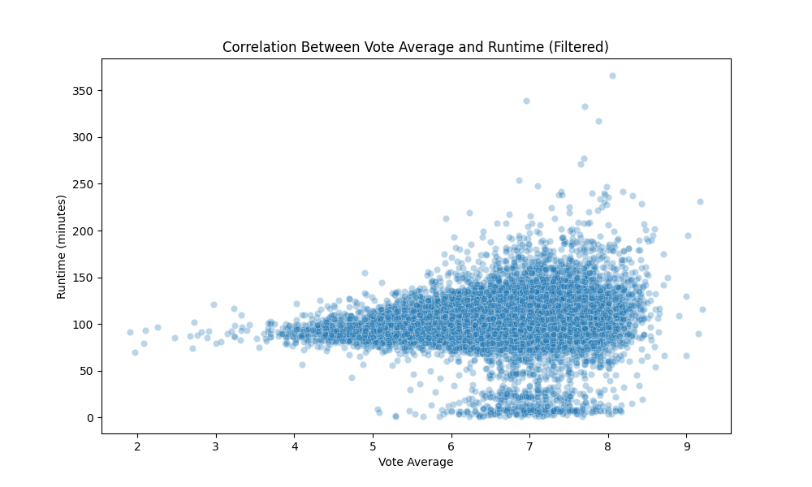

This week, I decided not to use the census data. Even though it has many interesting points, I'm looking
for another data set that meets my requirement of having 1 million data points. That's when I found
Kaggle. They have thousands of different data sets in various formats and sizes, with some having over
10 million rows of data. I searched for suitable data sets and found many good ones, but most had
issues.
I came across a data set that had a list of many movies and information about them, such as the titles
where they were, their average ratings, how many reviews it's duration and more. I found this
interesting. I desired to take the data and view it in graphs with the tool I had learned in the
previous weeks. I decided to graph a scatter plot of the film's duration against its rating to see if
there is a collation between the two and see the higher rated length for a movie. The graph below grabs
the data and puts it in a scatter plot, but what I found with doing this is that some films had a length
of 10 days, which stuffed up the graph view. I discovered that documents in the data set had a long
duration.

Python
import pandas as pd
import seaborn as sns
import matplotlib.pyplot as plt
# Load the dataset
data = pd.read_csv('TMDB_movie_dataset_v11.csv')
# Display the first few rows to verify
print(data.head())
# Create a scatter plot with the filtered data
plt.figure(figsize=(10, 6))
scatter_plot = sns.scatterplot(x='vote_average', y='runtime', data=data, alpha=0.3)
# Add a title and labels
plt.title('Correlation Between Vote Average and Runtime')
plt.xlabel('Vote Average')
plt.ylabel('Runtime (minutes)')
# Show the plot
plt.show()
My initial approach to solving this issue was to eliminate any unwanted data from the CSV file. I first
attempted this using Excel, but I discovered that it couldn't handle the volume of data. As a result, I
decided to use the Ubuntu terminal for this task, as it doesn’t require graphical processing. To
accomplish this, I used the following command:
Ubuntu
cat 'old.csv' | grep -v 'what you want to get rid of' > 'new_file_name'

To understand the command, let's break down what each symbol means. The command ‘cat’ simply opens a file
within the terminal. For example, if you have a text file named text.txt and you run ‘cat text.txt', it
will display the contents of that file.
Next, the ‘|' symbol, called a pipe, takes the output from the command on its left and passes it to the
command on its right. In this case, the right command is ‘grep', which searches for lines containing a
specified word. However, in this instance, I wanted to filter out everything except for the documentary,
which is why I included the ‘-v' option with ‘grep'.
After filtering the selected lines, I can redirect the output to a new file using the ‘>' symbol,
followed by the name of the file I want to create.
This was great; it worked very quickly. However, after using the new file, I encountered a new problem
with the data. Not all of the long films were documentaries; some were collections of cartoons, for
example. To address this, I applied a filter that restricted the films to those under 400 minutes. This
adjustment made the data less cluttered at the bottom, allowing for a clearer view of where each movie
was positioned, as seen in the image below. Additionally, I discovered that there were movies with zero
or just one review, which created lines at each increment on the vote average, predominantly forming
along the zero line. so I also filtered out any movie with less than 100 reviews.

Python
# Filter out movies with a runtime of 0 or less, longer than 400 minutes, and with a vote count of 0
filtered_data = data[(data['runtime'] > 0) & (data['runtime'] <= 400) & (data['vote_count'] > 100)]
After adjusting the initial data set, I realised that the accuracy was compromised due to alterations.
Additionally, there was insufficient data to draw meaningful conclusions, as many columns contained
missing information from the movies, making it impossible to obtain reliable results.
After experimenting with that data, I searched for a more suitable data set for my project. I came across
a dataset about jobs around the globe, which included details such as salaries, required experience, and
more. This dataset seemed perfect as it contained enough information to meet my requirements. However,
there was one issue: the data was synthetic. While this could work, my analysis would be based on
hypothetical perspectives rather than actual correlations among the variables.